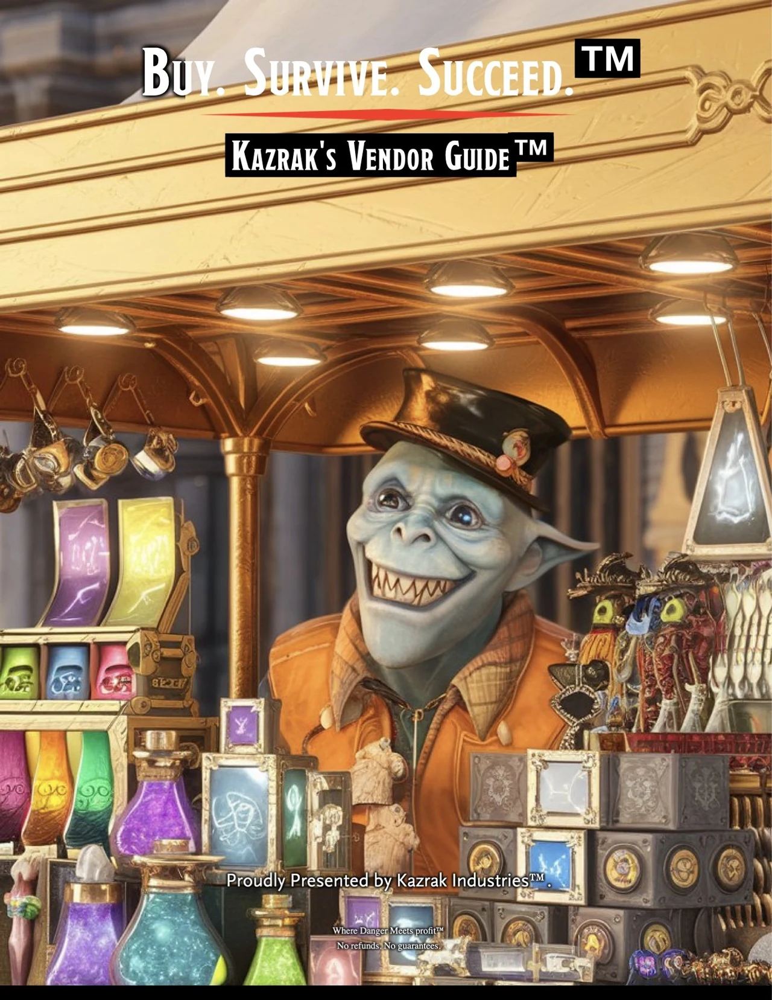
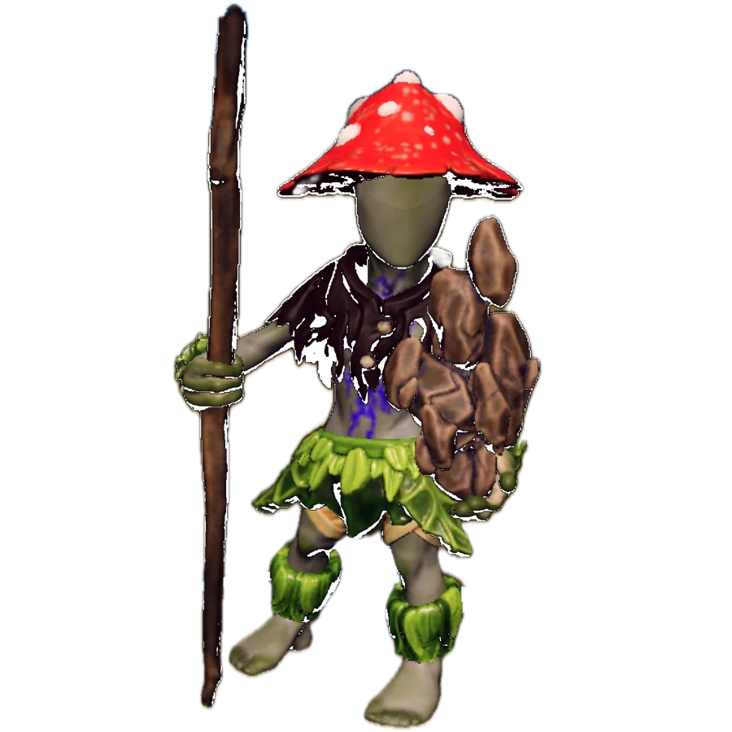

Welcome before wonder
Players get enough structure to feel safe, then enough space to surprise the table.
I’m Kyle. I run tabletop adventures for first-time players, longtime groups, and anyone curious about what happens when the dice hit the table. Join a public game in the Phoenix area, or bring me your own party.
Your first tabletop game? You can learn as we play.

New to the table?
A tabletop roleplaying game is a story you help make. You describe what your character tries. I play the world around you, explain the rules when they matter, and help everyone find a turn.
We start with the premise, introductions, and what everyone is comfortable with. Questions and pauses are welcome. You can speak in character, describe an action, or take a moment to think. Check the event page for the time, location, and what’s provided.
Each one shows a different kind of fun: long-game consequence, bright table pressure, cinematic mission play, and custom systems players can actually enter.

A long-running fantasy campaign about nobodies becoming dangerous enough for the world to notice. The value is continuity: factions move, consequences echo, and players can still find the thread.
At the table: Deep lore gets turned into choices players can actually use.
Explore more
A fantasy workplace hazard disguised as a team-building opportunity. The Jenga tower turns risk into a shared physical joke: HR would call it morale. The table knows better.
At the table: The joke lands because the mechanic is visible, physical, and easy to teach.
Explore more
A mission-driven sci-fi campaign built around briefings, objectives, maps, role support, and episode pacing. It proves a different kind of table craft: fast orientation inside a big premise.
At the table: Players get a clear mission frame, a shared team identity, and concrete tools for the scene.
Explore more
A custom sci-fi card world built around factions, missions, and table-tested pressure. The card work shows a different side of GM craft: readable mechanics, faction identity, and balance you can actually play.
At the table: Faction identity and readable cards make custom systems feel playable.
Explore moreThe job is not just lore. It is welcome, pace, clarity, trust, recovery, and payoff. I design the room so people can relax into the story.
Players get enough structure to feel safe, then enough space to surprise the table.
Deep settings become playable through clear factions, visible stakes, and choices people remember.
Custom mechanics do their job quietly: they create pressure, reveal tradeoffs, and keep the scene moving.
Prepped, warm, adaptable, and focused on making the table easy for organizers and players.
I run games for people who want high adventure without social friction. The table gets a strong premise, a clean first step, and room for players to push the story somewhere I could not have planned alone.
My style is collaborative, flexible, and homebrew-friendly. I like big worlds, but I care more about whether players can use them: a faction they understand, a choice with teeth, a rule that creates pressure, or a joke that helps the room relax.
Expect rich roleplay, player-driven consequences, table safety, strange systems, and a host who pays attention to pacing, comfort, and the people behind the characters.
Planning a game night for friends, a private event, or a venue? Tell me about the group, the time you have, and the kind of story you want to try.
Beginner nights, organized play, and special events that need a host who can represent the space well.
First-timers and veterans can share the same table without one side feeling lost or slowed down.
One-shots with a strong premise, clean onboarding, and enough texture to feel bigger than a demo.
Read player reviews on StartPlaying. If you’ve played at my table, you can leave your own or share private feedback about the session.
A strong table gives people something specific to remember: the choice that landed, the scene that surprised them, and the moment they knew they belonged.
Players should leave with one scene they keep replaying, one choice that mattered, and one reason to come back.
A good room lets people try the bold voice, the messy plan, and the sincere character beat.
Players can feel the size of the setting without needing homework before they make a choice.
The table can swerve, joke, and surprise itself without losing pace or emotional payoff.
Mechanics create pressure and texture, then get out of the way when the scene needs air.
I've had the chance to play with Kyle as a Dungeon Master/Game Master across three different campaigns, including both D&D 5e and Daggerheart, and I can honestly say he brings something really special to the table.
Kyle is creative, imaginative, and deeply thoughtful in the way he builds worlds and stories. His campaigns are immersive and expansive, but they never feel like they lose sight of the players. He puts a lot of care into getting to know each character, often spending one-on-one time with players to understand what they're hoping to explore, and then finding creative homebrew ways to make those visions come alive.
One of my favorite things about his games is that his homebrews are genuinely unique. They can be funny, heartfelt, surprising, and emotionally resonant, often engaging real-world themes while still feeling fully rooted in high fantasy. His campaigns can be challenging, but in a way that feels satisfying and rewarding rather than punishing.
I also really appreciate the way Kyle approaches safety, accessibility, and community at the table. He is attentive to player comfort, open to feedback, and cares about making the game feel welcoming and collaborative. He creates space for people to participate in ways that work for them, and he helps build a table culture where players feel invested not only in the story, but in each other.
Kyle is also really intentional about making sure players have meaningful character and story moments. He pays attention to everyone at the table and looks for ways to give each character time to shine, whether that means a personal arc, a dramatic choice, a funny moment, or a homebrew feature that helps bring a player's vision to life. It makes the campaigns feel collaborative and personal, rather than like players are just moving through a story that was already written without them.
My favorite world of his is Peril to Profit, a fantasy steampunk, hyper-capitalist corporate satire with a vibe somewhere between Borderlands and Fallout's Vault-Tec. It's hilarious, sharp, weird, imaginative, and full of heart.
Kyle brings a rare mix of humor, emotional depth, creativity, flexibility, and care to his games. I'd absolutely recommend him to anyone looking for a GM who can build a memorable world, support meaningful character arcs, and create a table that feels fun, safe, and genuinely connected.

A few adjacent projects show the same habit from another angle: turning messy play, systems, notes, and worldbuilding into something other people can explore.
Tell me the room, the players, the tone, and what would make the event a win. I will help shape the first session into something clear, welcoming, and worth returning to.
 Digital business card
Digital business card